Home
Resources
Participate
Gallery
News
Contact
Exoplanet
Select Exoplanet
Gliese 12 b
Gliese 667 Cc
Kepler-22b
Proxima Centauri b
User
Select User
User1
User2
Welcome to Exoplanet Explorer
Select an exoplanet or search for information above.
Select a Song
Select Song
Song to Gliese 12 b
Kepler-22b Melody
Welcome to the Song Explorer
Select a song to see the details.